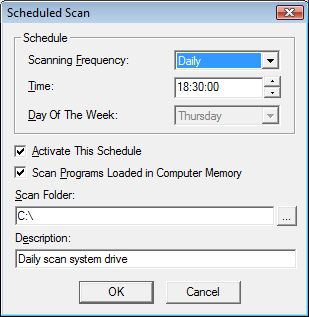
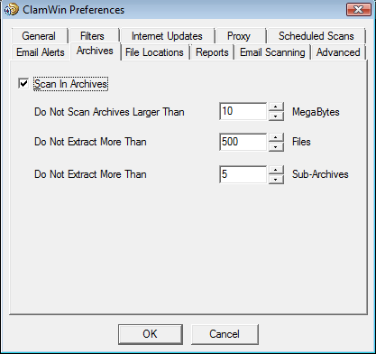

Pour configurer ClamWin, faites soit un clique-droit sur l'icône à droite de la barre des tâches et sélectionnez Configure ClamWin, ou, depuis la fenêtre principale du programme, choisissez Preferences dans le menu Tools. Une boîte de dialogue comportant onze onglets sera affichée (si vous n'avez pas installé l'extension pour Microsoft Outlook, l'onglet “Email Scanning” ne s'affichera pas). Cliquer sur OK fermera la boîte de dialogue et sauvegardera tous les changements effectués. Cliquer sur Cancel fermera la boîte de dialogue sans sauvegarder les changements effectués.
Chaque onglet est détaillé ci-dessous.
Cet onglet comporte des options qui contrôlent le comportement de ClamWin lors des analyses antivirales, et ce que ClamWin doit faire des fichiers infectés. Les options Scanning Options contrôlent le comportement de ClamWin durant l'analyse antivirale. Toute combinaison d'options peuvent être sélectionnée. Les options proposées sont les suivantes:
Display Infected Files Only: Quand ClamWin est en train d'effectuer une analyse antivirale, il affiche le nom des fichiers au fur et à mesure qu'il les analyse. Si cette option est sélectionnée, ClamWin affichera uniquement le nom des fichiers infectés qu'il a détecté. Sélectionner cette option peut augmenter légèrement la vitesse d'analyse.
Scan In Subdirectories: Sélectionnez cette option pour que ClamWin analyse les sous-répertoires ainsi que le répertoire spécifié.
Display File Scanned % Progress Indicator: Si cette option est sélectionnée, ClamWin affichera le nom du fichier qu'il est en train d'analyser, avec la progression en pourcentage entre parenthèses. Pour les archives, une ligne tournante s'affichera, indiquant que l'analyse se poursuit.
Les options Infected Files contrôlent quelle décision ClamWin doit prendre s'il détecte un virus. Une seule action à effectuer peut être choisie. Les options sont:
Report Only: Si cette option est sélectionnée, ClamWin signalera simplement qu'un virus a été détecté.
Remove (Use Carefully): Si cette option est sélectionnée, ClamWin effacera définitivement le fichier infecté. Le fichier ne sera pas placé dans la corbeille de Windows.
Move To Quarantine Folder: Si cette option est sélectionnée, ClamWin déplacera le fichier infecté vers le dossier défini. Pour changer ce dossier, entrez un chemin dans la boîte de texte, ou cliquez sur le bouton ... pour trouvez un dossier grâce à l'explorateur.
Si un fichier du même nom est déjà présent dans le dossier de quarantaine, alors ClamWin ajoutera un point suivi d'un nombre au nouveau fichier, afin d'éviter d'écraser le fichier existant. Par exemple: Si un fichier appelé eicar.com est dans le dossier de quarantaine, et qu'un virus est détecté dans un fichier appelé eicar.com, alors le second exemplaire sera déplacé vers le dossier de quarantaine et renommé en eicar.com.000, un troisième exemplaire y serait de la même manière déplacé et renommé en eicar.com.001, etc.
Finalement, l'option Unload Infected Programs from Computer Memory détermine si ClamWin doit décharger un fichier de la mémoire, s'il est détecté comme étant infecté lors de l'analyse de la mémoire. Ceci est nécessaire pour mettre en quarantaine correctement un tel fichier.
Dans cet onglet, ClamWin peut-être configuré pour analyser seulement certains types de fichiers, ou pour ignorer certains types de fichiers. Ces deux options peuvent être combinées pour obtenir un plus grand contrôle sur les types de fichiers qui seront analysés.

Des fichiers précis peuvent être spécifiés en indiquant leur chemin complet, par exemple:
C:\Emplacement\du\dossier\Fichier.ext
Des dossiers précis peuvent être spécifiés en indiquant leur chemin complet, et en incluant un * à la fin, par exemple:
C:\Emplacement\du\dossier\*
Notez que * ne fonctionne pas avec \, ainsi si vous voulez inclure ou exclure un dossier avec tout les sous-dossiers vous devez utiliser la syntaxe des expressions régulières et ajouter .* (point étoile) à la fin, par exemple:
<C:\\Emplacement\\du\\dossier\\.*>
Les Expressions Régulières sont enfermées à l'intérieur de <> et les \\ sont nécessaires car \ est un caractère réservé.
Les Expressions régulières peuvent être utilisées en vue d'une plus grande flexibilité, mais doivent être contenues entre crochets (<ExpressionRégulière>). Des informations détaillées concernant les expressions régulières, dont des tutoriels, sont librement disponibles sur la toile. Faites une recherche grâce à votre moteur de recherche préféré sur les termes regular expression tutorial.
Par défaut, les extensions suivantes sont exclues des analyses virales:
*.dbx (utilisé par Microsoft Outlook Express pour stocker les e-mails etc.)
*.tbb (utilisé par Ritlabs The Bat! pour stocker les e-mails etc.)
*.pst (utilisé par Microsoft Outlook pour stocker des données)
*.dat
*.log
*.evt
*.nsf
*.ntf
*.chm (fichier d'aide Windows)
Sur cette onglet, vous pouvez contrôler comment ClamWin met à jour les signatures des virus.

Enable Automatic Virus Database Updates: Lorsque cette option est sélectionnée, ClamWin vérifiera automatiquement la présence de mises à jour et les téléchargera si nécessaire. La fréquence de vérification et l'heure de vérification peuvent être sélectionnés par l'utilisateur.
Si ClamWin n'est pas démarré (ou que l'ordinateur est éteint) à une heure spécifiée, la mise à jour se fera la prochaine fois que ClamWin démarrera (ce qui sera normalement la prochaine fois que l'ordinateur sera démarré). La seule exception s'applique lorsque la fréquence est définie sur "workdays", dans ce cas la mise à jour ne se fera que le Lundi.
L'adresse du serveur à contacter peut être réglé manuellement. La plupart des utilisateurs désireront laisser le réglage par défaut (database.clamav.net). Cependant, si vous avez un serveur local qui est un miroir de database.clamav.net, vous pouvez entrer son adresse à la place. Pour voir la liste des miroirs, allez sur www.clamav.net.
Warn if Virus database is Out of Date: Si cette option est sélectionnée, ClamWin affichera une alerte lorsque vos signatures de virus sont périmées.
Update Virus Database On Logon: Si cette option est sélectionnée, ClamWin vérifiera la présence de mises à jour des signatures lorsqu'un utilisateur se connecte sur l'ordinateur.
Notify About New ClamWin Releases: Si cette option est sélectionnée, ClamWin vérifiera la présence de nouvelles versions. Cette vérification se fait 5 minutes après le démarrage de ClamWin, puis toute les 24 heures.
Si vous vous connectez à Internet via un serveur proxy, entrez les informations dans cet onglet. Sinon, laissez ces champs vides. La plupart des utilisateurs n'utilisent pas de serveur proxy, et peuvent donc ignorer sans risque cet onglet.
Cet onglet permet à l'utilisateur de configurer ClamWin de façon à démarrer des analyses antivirales à certaines heures. Les détails des analyses programmées sont affichés. Pour ajouter une analyse, cliquez sur le bouton Add, puis indiquez une description, la fréquence, l'heure, et les fichiers (ou dossiers) à analyser.


Une analyse déjà programmée peut être modifiée en cliquant sur le bouton Edit, ou peut être supprimée en cliquant sur le bouton Remove.
Les analyses programmées peuvent être activées ou désactivées en cliquant sur le bouton approprié. Une analyse désactivée ne démarrera pas à l'heure programmée.

Pour que ClamWin envoie un rapport par d'e-mail lorsqu'un virus est détecté, cochez l'option Send Email Alert On Virus Detection. Complétez les informations de votre serveur SMTP, et les informations pour le message (sujet, adresse d'expéditeur, adresse du destinataire).
Note: certains serveurs SMTP ne demande pas de nom d'utilisateur et de mot de passe. Si c'est le cas, laissez ces champs vides.
Pour tester la configuration, cliquez sur le bouton Send Test Email.
Lorsque cette option est sélectionnée, ClamWin enverra un rapport par e-mail chaque fois qu'un virus est trouvé. Cet e-mail comprendra le nom de l'ordinateur d'où a été envoyé cet e-mail, ainsi qu'une copie du rapport de l'analyse antivirale.
ClamWin peut analyser les fichiers contenus dans les archives compressées (comme les fichiers .zip).

Cet onglet permet à l'utilisateur de choisir si ClamWin doit ou pas analyser le contenu des archives, et sélectionner la taille maximale des archives à analyser, le nombre maximal de fichiers à extraire, et le nombre maximal de sous-archives à extraire.
Il est à noter qu'analyser les archives compressées peut ralentir une analyse, et donc par conséquent désactiver l'analyse des archives compressées peut réduire la durée des analyses antivirales.
Cet onglet permet de changer la localisation du fichier du programme ClamScan, FreshClam (le programme utiliser pour récupérer les mises à jour des signatures des virus) et des signatures des virus.
Ces valeurs sont fixées durant l'installation, et n'ont normalement pas besoin d'être modifiées. Ne changez pas ces paramètres à moins que vous ne sachiez ce que vous faites. Si ceux-ci sont réglés incorrectement, ClamWin cessera de fonctionner.

Cet onglet permet à l'utilisateur de changer la localisation et le nom des fichiers rapports. La plupart des utilisateurs n'auront pas besoin de changer ces réglages.

Vous pouvez également activer ou désactiver l'affichage de messages d'alerte de type infobulle sur cet onglet. Par défaut, de tels messages sont activés. Déselectionner la case Display Pop-up Notification Messages In Taskbar empêchera l'affichage de messages d'informations quand des virus sont détectés, quand les signatures sont mises à jour, etc.
Cet onglet apparaît seulement, si l'extension pour Microsoft Outlook est installé.

L'utilisateur peut choisir d'analyser les e-mails entrants et/ou les e-mails sortants.
Cet onglet comprend 6 paramètres. La configuration par défaut sera correcte pour la plupart des utilisateurs.

Treat Files As Mailboxes: Si cette option est sélectionnée, ClamWin analysera tous les fichiers comme s'ils étaient des messages e-mail au format MIME (ex: les boîtes mail Unix/Linux, les fichiers .eml sauvegardés d'Outlook Express). Notez que les fichiers non-MIME peuvent être analyser avec cette option sélectionnée, mais cela ralentira l'analyse.
Extract Attachments and Macros from MS Office Documents: Si cette option est sélectionnée, ClamWin analysera les documents MS Office à la recherche de macro-virus.
Try to Scan Executable Files Only: Si cette option est sélectionnée, ClamWin analysera seulement les fichiers exécutables.
Additional Clamscan Command Line Parameters: Si vous voulez utiliser les options en ligne de commande de Clamscan qui ne sont actuellement pas pris en charge par ClamWin, vous pouvez les ajouter ici.
Limit Log File Size To: Les plus anciens messages du rapports seront effacés pour garder le fichier à la taille indiquée.
Scanner Priority: Cette option peut être réglée sur Low ou Normal, et détermine la manière dont la puissance du processeur est répartie entre ClamWin et les autres applications. La configuration par défaut est Low ce qui rend les analyses plus lentes, mais cela permet d'avoir moins d'impact sur les autres applications.